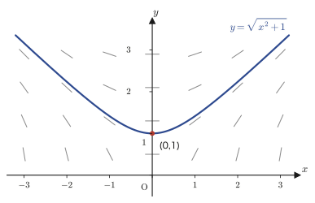
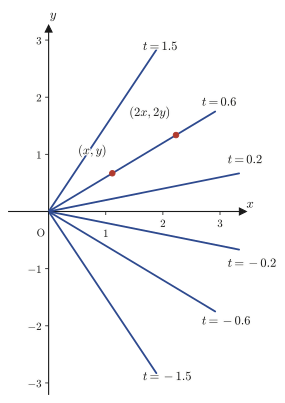
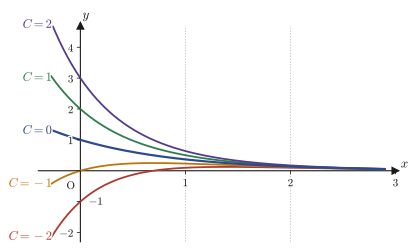

Chapter 33Basic Solution Methods for First-Order Ordinary Differential Equations
In Part I we acquired the techniques for differentiating functions (Chapters 1–4), partial differentiation, which is the differentiation of multivariable functions (Chapter 6), and the techniques of integration, the inverse operation of differentiation (Chapters 5 and 7). In Parts VI and VII we used these tools to study superpositions of trigonometric functions (Fourier series and transforms) and even a device that converts complicated functions into integrals of exponential functions (the Laplace transform). In fact, one of the main applications of the Laplace transform was to solve linear differential equations by disguising them as algebraic equations (Chapter 31). However, we have not yet studied in a systematic way how to solve differential equations head-on—without borrowing the power of transforms. Part VIII, which begins with this chapter, takes up exactly that.
Here a change of mindset is needed. In junior high school and high school, “solving an equation” meant, for example, solving $2x-4=0$ to obtain $x=2$: the solution was a number (a value). A differential equation, however, is an equation containing an unknown function and its derivative, and its solution is a function. For example, to solve the equation $\diff yx=2x$ is to find all the functions $y$ “that become $2x$ when differentiated,” and the answer is $y=x^2+C$ ($C$ is an arbitrary constant), a collection (family) of functions. The same phrase “solve an equation” demands an answer on a completely different scale. This difference may be confusing at first, but by the time you finish reading this chapter it should feel natural.
In this chapter, after setting up the basic terminology and classification of differential equations (Section 33.1), we take on, one after another, five types of first-order ordinary differential equations that can be solved exactly by concrete procedures—separable, homogeneous-type, first-order linear, Bernoulli, and Riccati equations. The spirit common to every type is the idea of “finding one clever replacement (substitution) that reduces the equation to a form we can already solve.” This spirit carries over unchanged to the exact differential equations and the second-order linear differential equations that we study from Chapter 34 on.
- The definition of a differential equation, and its classification into ordinary and partial differential equations, linear and nonlinear, and homogeneous and nonhomogeneous (a classification tree)
- Separable equations $\diff yx=f(x)g(y)$: how to solve them—the meaning of the operation of “attaching $\dd x$ and $\dd y$”
- Homogeneous-type equations $\diff yx=f\left(\dfrac yx\right)$: how to solve them—reduce them to separable equations by the substitution $\dfrac yx=t$
- An application of separable equations $\diff yx=f(ax+by+c)$: how to solve them—use the substitution $ax+by+c=t$
- First-order linear differential equations $y'+p(x)y=g(x)$: derive the general solution in two ways, by variation of parameters and by the integrating factor method, and then verify for yourself “why we may change a constant into a function”
- Bernoulli's differential equation $y'+p(x)y=g(x)y^n$: reduce it to a first-order linear differential equation by the substitution $u=y^{1-n}$
- Riccati's differential equation $y'+P(x)y^2+Q(x)y+R(x)=0$: when one particular solution is known, reduce it to Bernoulli form (and then further to a first-order linear equation) by the substitution $y=y_1+u$
Source notes: Yasuhide Mochizuki, Mathematics Notes: Ordinary Differential Equations, pp. 1–9.
33.1 What Is a Differential Equation? (Classification and Terminology)
Let us begin with a concrete example. We want to find the function $y=y(x)$ that satisfies $\diff yx=2x$. Integrating both sides with respect to $x$, we find $y=x^2+C$ ($C$ is an arbitrary real number). This is not a single function: there is one for every value of $C$, so it is a family of parabolas. It helps to picture the four graphs for $C=0,1,-1,2$—they differ only in the “height of the vertex,” so parabolas of the same shape are stacked one above another. In this way, when we solve an equation containing an unknown function $y$ and its derivative $\diff yx$, the answer is not a single number but a family of functions containing an arbitrary constant. This is the concrete content of the statement made at the beginning that “the solution of a differential equation is a function.”
Definition 33.1: Differential equation
An equation containing an unknown function and its derivatives (of order one or higher) is called a differential equation. Whereas the solutions of equations in the usual sense (such as algebraic equations) are numbers, the solution of a differential equation is a function. The highest order of the derivatives appearing in the equation is called the order of the differential equation. For example, $\diff yx=2x$ is a differential equation of first order, and $\dfrac{\dd^2y}{\dd x^2}+y=0$ is one of second order.
Differential equations are broadly classified into two kinds, according to how many variables the functions appearing in them have.
Definition 33.2: Ordinary and partial differential equations
An equation whose unknown function is a function of one variable, $y=y(x)$, and whose derivatives are all ordinary derivatives with respect to $x$, namely $\diff yx,\dfrac{\dd^2y}{\dd x^2},\dots$, is called an ordinary differential equation (abbreviated ODE). On the other hand, an equation whose unknown function is a function of two or more variables, such as $u=u(x,t)$, and whose derivatives are written as partial derivatives $\pdiff ux,\pdiff ut,\dots$ is called a partial differential equation (abbreviated PDE). From this chapter through Chapter 41 we deal with ordinary differential equations, and in Part IX (Chapters 42–49) we deal with partial differential equations (such as the wave equation and the Schrödinger equation).
Next, we pay attention to how the unknown function $y$ and its derivatives appear in the equation.
Definition 33.3: Linear and nonlinear differential equations
An ordinary differential equation of order $n$ of the form
$$ a_n(x)\frac{\dd^ny}{\dd x^n}+a_{n-1}(x)\frac{\dd^{n-1}y}{\dd x^{n-1}}+\cdots+a_1(x)\diff yx+a_0(x)y=g(x) $$—that is, an equation in which the unknown function $y$ and its derivatives $\diff yx,\dfrac{\dd^2y}{\dd x^2},\dots$ are never multiplied together, never squared, and never placed inside a nonlinear function such as $\sin y$ or $e^y$, but each appears as a linear expression (to the first power) with a coefficient that is a “function of $x$ alone”—is called a linear differential equation. An equation in which this condition fails (one containing $y^2$, $y\cdot y'$, $\sin y$, $(y')^3$, and so on) is called a nonlinear differential equation. In general, the solution of a nonlinear equation cannot be written down as an explicit formula, and the methods studied in this chapter apply only to special types among them (separable, homogeneous-type, Bernoulli, and Riccati types, and so on).
Caution: Still linear even if the “coefficients” contain $x$
In the definition of a linear differential equation, “linear expression” refers strictly to the unknown function $y$ and its derivatives. The coefficients $a_n(x),\dots,a_0(x),g(x)$ may contain $x^2$, $\sin x$, or $e^x$. For example, $x^2y''+(\sin x)y'-y=e^x$ is linear (because it is a linear expression in $y,y',y''$). On the other hand, $y''+y^2=0$ and $yy'=x$ are nonlinear, because factors of $y$ and factors of $y'$ are multiplied together.
Among linear differential equations, there is one further level of classification, according to whether the right-hand side $g(x)$ (the “externally applied term,” which contains none of $y,y',\dots$) is present or not.
Definition 33.4: Homogeneous and nonhomogeneous linear differential equations
A linear differential equation $a_n(x)y^{(n)}+\cdots+a_0(x)y=g(x)$ is said to be homogeneous when $g(x)\equiv0$ (identically $0$), and nonhomogeneous (also called inhomogeneous) when $g(x)\not\equiv0$. (In Japanese, each of these two terms also has a variant spelling.) In the homogeneous case, $y\equiv0$ (always $0$, regardless of $x$) obviously satisfies the equation, so we call it the trivial solution. When solving a nonhomogeneous equation, the homogeneous equation obtained by replacing $g(x)$ with $0$ is called the associated homogeneous equation, and it plays an important role from Section 33.3 on.
For both ordinary and partial differential equations, the linear ones divide further into homogeneous and nonhomogeneous (this classification is not used for nonlinear ones). Organizing this relationship into a tree diagram gives Figure 33.1.
Why?: The symbol $\equiv$ (identically equal) in $g\equiv0$
In the figure, $g\equiv0$ means “$g(x)$ is $0$ for every $x$.” The symbol $\equiv$ (the congruence symbol, meaning “identically equal”) emphasizes that the function is not merely $0$ at particular values of $x$ (for example, $g(x)=\sin x$ happens to be $0$ at $x=0,\pi,2\pi,\dots$) but is identically $0$ as a function. In this book, where there is no risk of confusion, we also write simply $g(x)=0$.
Example 33.1: Classifying differential equations
Classify each of the following differential equations as ordinary or partial, linear or nonlinear, and (if linear) homogeneous or nonhomogeneous.
(a) $y''+xy'=\sin x$ (b) $xy'-y=x^2$ (c) $\pdiff ut=\pdiff{^2u}{x^2}$ (d) $y'=y^2+x$
Solution. (a) The unknown function $y$ is a function of one variable, $y(x)$, so this is an ordinary differential equation. It is a linear expression in $y,y',y''$ (the coefficient of $y''$ is $1$, the coefficient of $y'$ is $x$, and the right-hand side $\sin x$ does not contain $y$), so it is linear. Since the right-hand side is $g(x)=\sin x\not\equiv0$, it is nonhomogeneous.
(b) An ordinary differential equation. Since $xy'-y=x^2$ is a linear expression in $y,y'$ (with coefficients $x,-1$, respectively), it is linear. Since the right-hand side is $g(x)=x^2\not\equiv0$, it is nonhomogeneous.
(c) The unknown function $u$ is a function of two variables, $u(x,t)$, and the equation contains the partial derivatives $\pdiff ut,\pdiff{^2u}{x^2}$, so it is a partial differential equation (this is precisely the heat equation, which we study in Chapter 43). Since it is a linear expression in $u,\pdiff ut,\pdiff{^2u}{x^2}$, it is linear. If we move the right-hand side to the left and write $\pdiff ut-\pdiff{^2u}{x^2}=0$, every term contains $u$ or one of its derivatives, and there is no term free of $u$ (the counterpart of $g$), so it is homogeneous.
(d) An ordinary differential equation. The right-hand side contains $y^2$ (the square of $y$), so it is nonlinear. For nonlinear equations we do not use the classification into homogeneous and nonhomogeneous at all.
With this, the necessary terminology is in place. From the next section on, among the first-order ordinary differential equations (with many nonlinear ones mixed in), we look in turn at five types that can be solved exactly by concrete procedures.
33.2 Separable Equations and Homogeneous-Type Equations
From here on we will repeat the same pattern five times: look at the given differential equation, find one clever substitution, and reduce the equation to the most basic type, called a “separable equation.” So let us begin with the separable equation itself.
33.2.1 Separable equations
When the right-hand side of a first-order ordinary differential equation such as $\diff yx=f(x)g(y)$ splits into the product of a “function of $x$ alone” and a “function of $y$ alone,” the equation is called a separable equation.
Formula 33.1: Solving separable equations
\begin{equation} \diff yx=f(x)\,g(y) \qquad (g(y)\neq0) \label{eq:33-separable-form} \end{equation}The general solution of this equation is obtained in the following form by dividing both sides by $g(y)$ and then integrating with respect to $x$.
\begin{equation} \int\frac{1}{g(y)}\,\dd y=\int f(x)\,\dd x \label{eq:33-separable-general} \end{equation}Derivation
Dividing both sides by $g(y)$ in the range where $g(y)\neq0$, we obtain
$$ \frac{1}{g(y)}\diff yx=f(x) $$Here we write the function $f(x)$ of $x$ together with $\dd x$, and the function $\dfrac{1}{g(y)}$ of $y$ together with $\dd y$, and separate the “$x$ side” from the “$y$ side” on the left and right, as in
$$ f(x)\,\dd x=\frac{1}{g(y)}\,\dd y $$(this is the origin of the name “separation of variables”). Putting $\displaystyle\int$ in front of both sides, we obtain Eq. \eqref{eq:33-separable-general}.
Why?: The reason we may “attach” $\dd x$ and $\dd y$
The symbol $\diff yx$ is Leibniz's notation, and, properly speaking, it is a single symbol meaning “the limit of the ratio of the infinitesimal change $\dd y$ in $y$ to the infinitesimal change $\dd x$ in $x$”; there is no guarantee whatsoever that we may pull $\dd y$ and $\dd x$ apart, as we would with a fraction. However, the operation above can be justified rigorously as follows. Let $y=y(x)$ be a solution of the equation, and integrate both sides with respect to $x$.
$$ \int\frac{1}{g(y(x))}\diff yx\,\dd x=\int f(x)\,\dd x $$The left-hand side is precisely the integration by substitution (covered in high school mathematics) with $u=y(x)$. Since $\dd u=\diff yx\,\dd x$, the left-hand side equals $\displaystyle\int\frac{1}{g(u)}\,\dd u=\int\frac{1}{g(y)}\,\dd y$. In other words, the formal operation of “attaching $\dd x$ and $\dd y$ and moving them across” is in fact just writing integration by substitution in advance, and it is a properly justified computation. From now on we will use this shorthand freely in this book as well.
Caution: It suffices to attach the constant of integration to just one side
Each side of Eq. \eqref{eq:33-separable-general} should in principle have its own constant of integration ($C_1$ on the left, $C_2$ on the right), but upon transposition they combine into a single arbitrary constant $C=C_2-C_1$. So in practice it suffices to write $+C$ on just one side from the start (most often on the side obtained by integrating the separated expression, or else all at once at the end).
Example 33.2: An initial value problem for a separable equation
Solve the differential equation $\diff yx=\dfrac xy$ ($y\neq0$) under the initial condition $y(0)=1$.
Solution. Rather than viewing the right-hand side as the product $f(x)g(y)$ of $f(x)=x$ and $g(y)=\dfrac1y$ (seeing $g(y)=1/y$ and writing $\diff yx=x\cdot\dfrac1y$), it is clearer to rewrite the equation directly as $y\,\diff yx=x$. Multiplying both sides by $y$, we get
$$ y\,\dd y=x\,\dd x $$and we put $\displaystyle\int$ in front of both sides.
$$ \int y\,\dd y=\int x\,\dd x \quad\Longrightarrow\quad \frac{y^2}{2}=\frac{x^2}{2}+C_1 $$Doubling both sides and letting $2C_1=C$, we get $y^2=x^2+C$. Substituting the initial condition $y(0)=1$ gives $1=0+C$, so $C=1$. Hence
$$ y^2=x^2+1 \quad\Longrightarrow\quad y=\sqrt{x^2+1} $$(since $y(0)=1\gt0$, we chose the positive square root). As a check, we compute $\diff yx=\dfrac{x}{\sqrt{x^2+1}}=\dfrac xy$, so the function indeed satisfies the equation. The graph of this solution is the upper half of the hyperbola $y^2-x^2=1$ (the branch that does not pass through the two points $(0,\pm1)$ on the $x$-axis).

33.2.2 Homogeneous-type equations
Next, we consider the case where the right-hand side is a function only of the ratio $\dfrac yx$ of $x$ and $y$.
Definition 33.5: Homogeneous-type differential equations
When a first-order ordinary differential equation can be written in the form
\begin{equation} \diff yx=f\left(\frac yx\right) \label{eq:33-homogeneous-form} \end{equation}the equation is called a homogeneous-type equation.
Caution: The two meanings of “homogeneous”
The term “homogeneous-type” used here has a different meaning from the distinction between “homogeneous and nonhomogeneous” linear differential equations that we learned in Section 33.1 (Definition 33.4). The homogeneity of Definition 33.4 was a property of linear equations—whether the right-hand side $g(x)$ is $0$—whereas the homogeneous type here is a property of first-order equations (mostly nonlinear)—whether the right-hand side can be written solely in terms of the ratio $y/x$. In English both are called “homogeneous,” which is confusing, but traditionally both are called “dōji” in Japanese as well, the original notes included. You need to judge from the context which meaning is intended.
The right-hand side $f(x,y)=f(y/x)$ looks like a function of the two variables $x,y$, but it actually depends on only one quantity, $y/x$. Thinking about what this quantity means geometrically makes the natural substitution apparent.
Intuition: $y/x$ is the direction seen from the origin
For a point $(x,y)$ in the plane ($x\neq0$), the ratio $t=y/x$ is the slope of the line joining the origin and that point. As in Figure 33.3, on a single line (ray) through the origin there lie many points at different distances from the origin, such as $(x,y)$ and $(2x,2y)$, but for every one of them the value of $y/x$ is the same $t$. The homogeneous-type equation $\diff yx=f(y/x)$ says that “the slope of the solution curve at a point is determined solely by which ray the point lies on (that is, by the value of $t$),” so it is natural to treat $t=y/x$ as a new unknown function.

Derivation: Reducing a homogeneous-type equation to a separable equation
Let $\dfrac yx=t$, that is, $y=xt$. Here $t$ is a new unknown function that will be determined as a function of $x$. Differentiating both sides with respect to $x$, by the product rule (for the product of $x$ and $t(x)$) the right-hand side becomes
$$ \diff yx=\diff{}{x}(xt)=1\cdot t+x\cdot\diff tx=xt'+t $$(we abbreviated $t'=\diff tx$). On the other hand, the right-hand side of the equation is $f(y/x)=f(t)$. Comparing the two, we obtain
$$ xt'+t=f(t) $$Leaving $t$ on the left-hand side and rearranging as
$$ x\diff tx=f(t)-t $$we see that this is already a separable equation in $t$ and $x$. In the range where $f(t)-t\neq0$, we divide both sides by $x\{f(t)-t\}$ to get
$$ \frac{1}{f(t)-t}\,\dd t=\frac1x\,\dd x $$and putting $\displaystyle\int$ in front of both sides, we obtain
\begin{equation} \int\frac1x\,\dd x=\int\frac{1}{f(t)-t}\,\dd t \label{eq:33-homogeneous-general} \end{equation}Computing the left-hand side gives $\ln|x|$ (+ a constant of integration), so if the integral on the right-hand side can be carried out, $t$ is obtained as a function of $x$, and finally we substitute $y=xt$ to return to the original variable $y$.
Example 33.3: A homogeneous-type differential equation
Solve the differential equation $\diff yx=\dfrac{x+y}{x}$ ($x\gt0$).
Solution. Rewriting the right-hand side as $\dfrac{x+y}{x}=1+\dfrac yx$, we see that the equation is of homogeneous type with $f(t)=1+t$. Setting $y=xt$, as in the derivation of the formula we have $\diff yx=xt'+t$, and the equation becomes
$$ xt'+t=1+t \quad\Longrightarrow\quad xt'=1 \quad\Longrightarrow\quad x\diff tx=1 $$Converting it to separable form, we get
$$ \dd t=\frac1x\,\dd x \quad\Longrightarrow\quad \int\dd t=\int\frac1x\,\dd x \quad\Longrightarrow\quad t=\ln x+C $$(since $x\gt0$, we wrote $\ln|x|=\ln x$). Substituting back $t=y/x$, we have
$$ \frac yx=\ln x+C \quad\Longrightarrow\quad y=x(\ln x+C) $$Check: $\diff yx=(\ln x+C)+x\cdot\dfrac1x=\ln x+C+1$. On the other hand, $\dfrac{x+y}{x}=1+\dfrac yx=1+\ln x+C$. The two agree.
33.2.3 An application of separable equations—the type $\diff yx=f(ax+by+c)$
There is one more type that can be reduced to a separable equation by a different kind of substitution. It is the case where the right-hand side is a function of a linear expression in $x,y$.
Definition 33.6: The type $\diff yx=f(ax+by+c)$
Let $a,b,c$ be constants ($b\neq0$), and consider an equation of the form
\begin{equation} \diff yx=f(ax+by+c) \label{eq:33-application-form} \end{equation}Whereas the homogeneous-type equation (Definition 33.5) was an equation depending only on “the ratio $y/x$,” this is an equation depending only on “the linear combination $ax+by+c$.”
Derivation
Let $t=ax+by+c$. Differentiating $t$ with respect to $x$, and noting that $y$ is a function of $x$ (the chain rule), we get
$$ t'=a+b\,\diff yx \qquad\cdots① \qquad\left(\text{hence}\ \diff tx-a=b\diff yx\right) $$On the other hand, from the equation, $\diff yx=f(ax+by+c)=f(t)$, so substituting this into the $b\diff yx$ part of ①, we obtain
$$ b\diff yx=b\,f(t) \qquad\cdots② $$Since ① and ② both express $b\diff yx$, their right-hand sides are equal:
$$ b\,f(t)=\diff tx-a \quad\Longrightarrow\quad \diff tx=b\,f(t)+a $$This is now a separable equation in $t$ alone. In the range where $bf(t)+a\neq0$, we divide both sides by $bf(t)+a$ and put $\displaystyle\int$ in front of both sides to get
\begin{equation} \int\dd x=\int\frac{1}{bf(t)+a}\,\dd t \label{eq:33-application-general} \end{equation}The left-hand side is simply $x+C$. If the integral on the right-hand side can be carried out, $t$ is obtained as a function of $x$, and solving $t=ax+by+c$ for $y$ takes us back to the original variable.
Example 33.4: A differential equation of the type $\diff yx=f(ax+by+c)$
Solve the differential equation $\diff yx=(x+y+1)^2$.
Solution. This is the case $a=1,b=1,c=1$, $f(t)=t^2$. Setting $t=x+y+1$, we have $\diff tx=1+\diff yx$, and substituting $\diff yx=(x+y+1)^2=t^2$, we get
$$ \diff tx=1+t^2 $$We put it in separable form. Since $1+t^2\neq0$ (always true), we divide both sides by $1+t^2$ to get
$$ \frac{1}{1+t^2}\,\dd t=\dd x \quad\Longrightarrow\quad \int\frac{1}{1+t^2}\,\dd t=\int\dd x $$The left-hand side is exactly the integration formula $\displaystyle\int\frac{1}{1+t^2}\dd t=\tan^{-1}t+C_1$ for the inverse tangent function ($\tan^{-1}$; the inverse operation of the derivative formulas for the inverse trigonometric functions in Chapter 3). Hence
$$ \tan^{-1}t=x+C \quad\Longrightarrow\quad t=\tan(x+C) $$Substituting back $t=x+y+1$, we have
$$ x+y+1=\tan(x+C) \quad\Longrightarrow\quad y=\tan(x+C)-x-1 $$To check the answer, we introduce the notation for the secant, $\sec\theta:=\dfrac1{\cos\theta}$. Dividing both sides of the identity $\sin^2\theta+\cos^2\theta=1$ by $\cos^2\theta$ ($\neq0$) gives $\tan^2\theta+1=\sec^2\theta$, that is, $\sec^2\theta=1+\tan^2\theta$. Using this (check: $\diff yx=\sec^2(x+C)-1=\{1+\tan^2(x+C)\}-1=\tan^2(x+C)=(x+y+1)^2$; they agree).
Application: Choosing among the three substitutions
The three types so far all rest on a common idea: reduce an “unsolvable form” to a separable equation (Formula 33.1) by a “clever substitution” of a single new variable. If the right-hand side is a function only of the ratio of $x,y$, try $t=y/x$ (the homogeneous type); if it is a function only of a linear combination of $x,y$, try $t=ax+by+c$ (the type of this section). If it is neither, the next step is to check whether it fits the linear, Bernoulli, or Riccati types that we study in the following sections.
33.3 First-Order Linear Differential Equations (Variation of Parameters)
All three types so far rested on the same idea: “find one good substitution and reduce the equation to a separable one.” The first-order linear differential equation, which we treat over this section and the next, is solved not by a substitution but by another tool altogether—variation of parameters (also called variation of constants; the Japanese name is a translation meaning, literally, “the method of varying a constant”)—and it is a type of extremely wide applicability. The second-order and higher-order linear differential equations of the following chapters are also extensions of this idea.
Definition 33.7: Standard form of a first-order linear differential equation
Let $p(x),g(x)$ be known functions that are continuous (on the interval under consideration). An equation of the form
\begin{equation} \diff yx+p(x)y=g(x) \label{eq:33-linear-form} \end{equation}is called a first-order linear differential equation. This is exactly the special case of the general form $a_n(x)y^{(n)}+\cdots+a_0(x)y=g(x)$ of Definitions 33.3 and 33.4 with $n=1$, $a_1(x)=1$ (we can normalize to this by dividing both sides), and $a_0(x)=p(x)$. The equation is nonhomogeneous when $g(x)\not\equiv0$ and homogeneous when $g(x)\equiv0$; recall that the equation $\diff yx+p(x)y=0$ of the homogeneous case is called the associated homogeneous equation (Definition 33.4) of the nonhomogeneous equation \eqref{eq:33-linear-form}.
The strategy for solving the nonhomogeneous equation \eqref{eq:33-linear-form} has the following two stages. [1] First, solve the associated homogeneous equation $\diff yx+p(x)y=0$ (it is separable, so the method of Section 33.2.1 can be used as it is). [2] Replace the arbitrary constant $C$ appearing in that solution by a function $u(x)$ of $x$ (variation of parameters), and look for a solution of the nonhomogeneous equation. Remarkably, these two stages alone determine the general solution completely.
33.3.1 Solving the associated homogeneous equation
Derivation [1]: Solving the associated homogeneous equation $y'+p(x)y=0$
When $g(x)\equiv0$, the equation is $\diff yx=-p(x)y$, which is a separable equation (Formula 33.1) with $f(x)=-p(x)$ and $g(y)=y$. Where $y\neq0$, dividing both sides by $y$ gives
$$ \frac1y\,\dd y=-p(x)\,\dd x $$Applying $\displaystyle\int$ to both sides, and letting $C_1$ be the constant of integration on the right-hand side, we get
$$ \int\frac1y\,\dd y=-\int p(x)\,\dd x+C_1 $$The left-hand side is nothing but the definition of $\ln|y|$ (the inverse operation of $\dfrac{\dd}{\dd y}\ln|y|=\dfrac1y$). Now we want to put the right-hand side into exponential form. Since $\ln e=1$, we can use the fact that $k\ln e=\ln e^k$ holds in general (the property of logarithms $a\ln b=\ln b^a$), and the equation can be rewritten as
$$ \ln|y|=\Bigl(-\int p(x)\,\dd x+C_1\Bigr)\ln e=\ln\Bigl(e^{-\int p(x)\,\dd x+C_1}\Bigr) $$Since the logarithm function $\ln$ is monotonically increasing (strictly monotone; Chapter 3), $\ln A=\ln B\iff A=B$ holds, and so
$$ |y|=e^{-\int p(x)\,\dd x+C_1}=e^{C_1}\cdot e^{-\int p(x)\,\dd x} $$(we used the law of exponents $e^{a+b}=e^a e^b$). Removing the absolute value gives $y=\pm e^{C_1}e^{-\int p(x)\,\dd x}$, so we let $\pm e^{C_1}=C$.
\begin{equation} y=Ce^{-\int p(x)\,\dd x} \label{eq:33-linear-homog-general} \end{equation}Caution: $C$ may be any real number, including $0$
In the argument above we assumed $y\neq0$ and divided both sides by $y$, so, strictly speaking, $\pm e^{C_1}$ cannot be $0$. However, $y\equiv0$ (that is, $y=0$ for every $x$) obviously also satisfies the equation $y'+p(x)y=0$ (the “trivial solution” of Definition 33.4), and this coincides with what we get by substituting $C=0$ into Eq. \eqref{eq:33-linear-homog-general}. In practice, therefore, we take “$C$ is any real number (including $0$)” from the start and call Eq. \eqref{eq:33-linear-homog-general} the general solution of the associated homogeneous equation.
33.3.2 Variation of parameters
Eq. \eqref{eq:33-linear-homog-general} is merely a solution of the associated homogeneous equation ($g(x)\equiv0$). To solve the nonhomogeneous equation ($g(x)\not\equiv0$), we now make a change of viewpoint called variation of parameters (also called variation of constants). That is, we replace the arbitrary constant $C$ in Eq. \eqref{eq:33-linear-homog-general} by an unknown function $u(x)$ that is allowed to depend on $x$, and consider functions of the form
$$ y=u(x)\,e^{-\int p(x)\,\dd x} $$Let us explore whether $u(x)$ can be chosen cleverly so that a function of this form satisfies the nonhomogeneous equation \eqref{eq:33-linear-form}.
Derivation [2]: Variation of parameters
Differentiate $y=u(x)e^{-\int p(x)\dd x}$ with respect to $x$. The right-hand side is “the product of $u(x)$ and $e^{-\int p(x)\dd x}$,” so we use the product rule; we also note that $\dfrac{\dd}{\dd x}e^{-\int p(x)\dd x}=e^{-\int p(x)\dd x}\cdot(-p(x))$ (by the chain rule; here $\dfrac{\dd}{\dd x}\Bigl(-\!\int p(x)\dd x\Bigr)=-p(x)$ is nothing but the fundamental theorem of calculus). Then we get
\begin{equation} y'=u'(x)\,e^{-\int p(x)\dd x}+u(x)\cdot\Bigl(-p(x)\Bigr)e^{-\int p(x)\dd x} \label{eq:33-linear-product-rule} \end{equation}Substitute this into $y'+p(x)y$.
$$ y'+p(x)y=\underbrace{u'(x)e^{-\int p\,\dd x}}_{\text{new term}}\ \underbrace{-\,u(x)p(x)e^{-\int p\,\dd x}}_{(\ast)}\ +\ \underbrace{p(x)u(x)e^{-\int p\,\dd x}}_{(\ast\ast)} $$The terms $(\ast)$ and $(\ast\ast)$ differ only in sign and are equal in absolute value, so they cancel each other and give $0$. Only the first term remains.
$$ y'+p(x)y=u'(x)\,e^{-\int p(x)\,\dd x} $$It suffices that this equal $g(x)$, so we obtain
\begin{equation} u'(x)\,e^{-\int p(x)\,\dd x}=g(x) \label{eq:33-linear-u-ode} \end{equation}Multiplying both sides by $e^{\int p(x)\dd x}$ (we use $e^{-\int p\dd x}\cdot e^{\int p\dd x}=e^0=1$), we get
$$ u'(x)=g(x)\,e^{\int p(x)\,\dd x} \quad\Longrightarrow\quad \dd u=g(x)e^{\int p(x)\dd x}\,\dd x $$Now we need only integrate to obtain $u$ (the right-hand side is a function of $x$ alone, so this is the simplest case of separation of variables). Applying $\displaystyle\int$ to both sides gives
$$ u(x)=\int g(x)\,e^{\int p(x)\,\dd x}\,\dd x+C $$Substituting this back into $y=u(x)e^{-\int p(x)\dd x}$ gives the general solution.
Formula 33.2: General solution of a first-order linear differential equation
The general solution of the first-order linear differential equation $\diff yx+p(x)y=g(x)$ is given by
\begin{equation} y=e^{-\int p(x)\,\dd x}\left\{\int g(x)\,e^{\int p(x)\,\dd x}\,\dd x+C\right\} \label{eq:33-linear-general} \end{equation}(where $C$ is an arbitrary constant).
Intuition: Why may we “vary” the “constant”?
At first glance, replacing $C$ in the solution $y=Ce^{-\int p\dd x}$ of the associated homogeneous equation by a function of our own choosing may seem high-handed. But what we are doing is merely a coordinate transformation: “regard the quantity $u(x):=y\,e^{\int p\dd x}$, obtained by dividing $y$ by $e^{-\int p\dd x}$, as a new unknown function, and rewrite the equation as an equation for $u(x)$.” It is only natural that $u(x)$ need not be a constant; rather, it is Eq. \eqref{eq:33-linear-u-ode}, which determines how $u(x)$ depends on $x$, that carries over the information of the original nonhomogeneous equation exactly as it is. We examine this “validity” in more detail in Section 33.4.2.
Example 33.5: Solving a first-order linear differential equation by variation of parameters
Solve the differential equation $\diff yx+2y=e^{-x}$ using variation of parameters.
Solution. This is the case $p(x)=2$, $g(x)=e^{-x}$. First we solve the associated homogeneous equation $y'+2y=0$. Since $\displaystyle\int p(x)\dd x=\int2\,\dd x=2x$, Eq. \eqref{eq:33-linear-homog-general} gives the general solution $y=Ce^{-2x}$. Next we replace $C$ by $u(x)$ and let $y=u(x)e^{-2x}$. Using the idea of Eq. \eqref{eq:33-linear-u-ode} (or, directly, Formula 33.2), we get
$$ u'(x)=g(x)e^{\int p\,\dd x}=e^{-x}\cdot e^{2x}=e^{x} $$Integrating both sides gives $u(x)=e^{x}+C$. Hence we obtain
$$ y=u(x)e^{-2x}=(e^{x}+C)e^{-2x}=e^{-x}+Ce^{-2x} $$Check: $y'=-e^{-x}-2Ce^{-2x}$, and $y'+2y=(-e^{-x}-2Ce^{-2x})+2(e^{-x}+Ce^{-2x})=(-1+2)e^{-x}+(-2C+2C)e^{-2x}=e^{-x}$. Indeed, it satisfies the original equation.

33.4 First-Order Linear Differential Equations (Integrating Factor Method) and the Validity of Variation of Parameters
We derived Formula 33.2 by a single route, variation of parameters, but in fact there is a completely different route to the same conclusion. In this section we first introduce that alternative method—the integrating factor method—and check that it agrees with the same Formula 33.2. After that, we examine at a deeper level why the idea of variation of parameters is justified (that is, why it did not simply work “by luck”).
33.4.1 The integrating factor method
Intuition: Using the “product rule” in reverse
The idea is this: in the equation $y'+p(x)y=g(x)$, perhaps the left-hand side $y'+p(x)y$ coincides, if we choose $h(x)$ well, with the form $(y\cdot h)'=y'h+yh'$ obtained by differentiating the product $y\cdot h(x)$ of $y$ and some function $h(x)$. If it does, the whole left-hand side becomes a single derivative $(y\cdot h)'$, and all that remains is to integrate both sides. We call this $h(x)$ an integrating factor. A tool with the same name appears in a different context in the next chapter (exact differential equations), so it is worth remembering.
Caution: The notation used below
In what follows, $y$ is the general solution of the equation (the one we wish to find), and $h(x)$ is an unknown function that we are about to determine (a candidate for the integrating factor). $p(x),g(x)$ remain the known functions given in Eq. \eqref{eq:33-linear-form}.
Derivation: The integrating factor method
First, differentiating the product $y\cdot h$ of arbitrary functions $y=y(x)$ and $h=h(x)$, we have, by the product rule,
\begin{equation} (y\cdot h)'=y'\cdot h(x)+y\cdot h'(x) \label{eq:33-linear-if-product} \end{equation}Next, let us multiply both sides of Eq. \eqref{eq:33-linear-form} by $h(x)$.
\begin{equation} y'\cdot h(x)+y\cdot p(x)\cdot h(x)=g(x)\cdot h(x) \label{eq:33-linear-if-times-h} \end{equation}Comparing the right-hand side of Eq. \eqref{eq:33-linear-if-product} with the left-hand side of Eq. \eqref{eq:33-linear-if-times-h}, we see that both have the same first term $y'h(x)$. Therefore, if $h(x)$ satisfies the condition
\begin{equation} p(x)h(x)=h'(x) \label{eq:33-linear-if-condition} \end{equation}then the right-hand side of Eq. \eqref{eq:33-linear-if-product} and the left-hand side of Eq. \eqref{eq:33-linear-if-times-h} coincide exactly. That is, $(y\cdot h)'=g(x)h(x)$, and the left-hand side combines into a single derivative. So let us actually find an $h(x)$ satisfying this condition \eqref{eq:33-linear-if-condition}. Dividing Eq. \eqref{eq:33-linear-if-condition} by $h(x)$ (we assume $h(x)\neq0$), we get
$$ p(x)=\frac{h'(x)}{h(x)} $$By the rule for differentiating a composite function, the right-hand side $\dfrac{h'(x)}{h(x)}$ equals $\dfrac{\dd}{\dd x}\ln|h(x)|$ (regarding $\ln|h|$ as a function of $h$ and applying the chain rule gives $\dfrac{\dd}{\dd x}\ln|h(x)|=\dfrac{1}{h(x)}\cdot h'(x)$). Integrating both sides with respect to $x$, we obtain
$$ \int p(x)\,\dd x=\int\frac{h'(x)}{h(x)}\,\dd x=\ln|h(x)| $$(We omitted the constant of integration on the right-hand side, because it suffices to choose one specific $h$ afterwards. For an integrating factor, “it is enough to find a single function satisfying condition \eqref{eq:33-linear-if-condition},” and there is no need to find the most general $h$.) Rewriting both sides in exponential form, removing the absolute value, and choosing the positive branch, we can adopt
\begin{equation} h(x)=e^{\int p(x)\,\dd x} \label{eq:33-linear-if-h} \end{equation}as an integrating factor. With this $h(x)$ we have $(y\cdot h)'=g(x)h(x)$, so integrating both sides with respect to $x$ gives
$$ y\cdot h(x)=\int g(x)\,h(x)\,\dd x+C $$Dividing both sides by $h(x)$ ($\neq0$), we obtain the general solution.
$$ y=\frac{1}{h(x)}\left\{\int g(x)h(x)\,\dd x+C\right\}=e^{-\int p(x)\,\dd x}\left\{\int g(x)\,e^{\int p(x)\,\dd x}\,\dd x+C\right\} $$Why?: The integrating factor method gives the same formula as variation of parameters
Substituting $h(x)=e^{\int p(x)\dd x}$ of Eq. \eqref{eq:33-linear-if-h} into the last formula gives a result that is exactly the same expression as $y=e^{-\int p\,\dd x}\{\int g\,e^{\int p\,\dd x}\,\dd x+C\}$ of Formula 33.2. The starting points and the paths of computation are completely different (variation of parameters “turns the $C$ in the solution of the associated homogeneous equation into a function,” whereas the integrating factor method “looks for a function $h(x)$ that makes the left-hand side a single derivative”), yet it is no coincidence that both arrive at the same formula. Indeed, $h(x)=e^{\int p\,\dd x}$ is exactly the reciprocal of the $e^{-\int p\,\dd x}$ used in variation of parameters, and the correspondence $u(x)=y\,h(x)$ directly links the two.
Example 33.6: Solving a first-order linear differential equation by the integrating factor method
Solve the same differential equation $\diff yx+2y=e^{-x}$ as in Example 33.5, this time by the integrating factor method.
Solution. Since $p(x)=2$, the integrating factor is, by Eq. \eqref{eq:33-linear-if-h}, $h(x)=e^{\int2\,\dd x}=e^{2x}$. Multiplying both sides of the equation by $h(x)=e^{2x}$, we get
$$ y'e^{2x}+2ye^{2x}=e^{-x}\cdot e^{2x}=e^{x} $$Since condition \eqref{eq:33-linear-if-condition} ($p(x)h(x)=h'(x)$; indeed $2e^{2x}=(e^{2x})'$) is satisfied, the left-hand side coincides with the derivative of the product, $(y\cdot e^{2x})'$.
$$ (y\cdot e^{2x})'=e^{x} $$Integrating both sides with respect to $x$, we get $y\cdot e^{2x}=e^{x}+C$. Dividing both sides by $e^{2x}$, we obtain
$$ y=e^{-2x}(e^{x}+C)=e^{-x}+Ce^{-2x} $$This agrees exactly with the answer obtained by variation of parameters in Example 33.5 (see also Figure 33.4).
33.4.2 The validity of variation of parameters
So far we have derived Formula 33.2 in two ways, but when we first introduced variation of parameters, one question remained unanswered: “why may we replace the constant $C$ in the solution $y=Ce^{-\int p\dd x}$ of the associated homogeneous equation by a function $u(x)$?” Let us now answer this last question.
Verification ①: What happens if we substitute $C$ as a true constant?
Suppose we regard $C$ as literally a constant and substitute $y=Ce^{-\int p(x)\dd x}$ ($C$ a constant) as it is into the left-hand side of the nonhomogeneous equation $y'+p(x)y=g(x)$. Let us check what happens. Since $y'=C\cdot(-p(x))e^{-\int p\dd x}$,
$$ y'+p(x)y=C\cdot\bigl(-p(x)\bigr)e^{-\int p\,\dd x}+p(x)\cdot C\,e^{-\int p\,\dd x}=0 $$(the two terms differ only in sign and cancel each other). This merely says that the associated homogeneous equation with $g(x)\equiv0$ is satisfied, and it is no different from the result [1] of Section 33.3.1. In other words, as long as we keep $C$ constant, we can never reach a solution of the nonhomogeneous equation ($g(x)\not\equiv0$). For $g(x)\not\equiv0$ to hold, the result of the substitution must not be $0$ but must leave behind “some function” $g(x)$, and for that the derivative of the function placed in the role of $C$ must not be $0$—that is, the quantity that plays the role of $C$ must not be a constant. This is the reason for making the replacement $C\to u(x)$ in variation of parameters.
Verification ②: Conversely, constructing $C$ from $y$
Now let us think from the opposite direction. Suppose that an arbitrary solution $y=y(x)$ of the equation $\diff yx+P(x)y=Q(x)$ is given (to avoid confusion of notation, here we write the coefficients of the nonhomogeneous equation with capital letters, $P(x),Q(x)$), and let us construct the quantity
$$ C(x):=y(x)\,e^{\int P(x)\,\dd x} $$(This is the formula obtained by working backward, $C=y\,e^{\int P\dd x}$, from the form $y=Ce^{-\int P\dd x}$ of the solution of the associated homogeneous equation.) Differentiating this $C(x)$ with respect to $x$, we have, by the product rule,
$$ \frac{\dd}{\dd x}C(x)=\diff yx\,e^{\int P(x)\dd x}+y\cdot P(x)\,e^{\int P(x)\dd x}=\Bigl(\diff yx+P(x)y\Bigr)e^{\int P(x)\dd x} $$Here, since we assumed from the start that $y$ is a solution of the equation $\diff yx+P(x)y=Q(x)$, we can substitute $\diff yx+P(x)y=Q(x)$.
\begin{equation} \frac{\dd}{\dd x}C(x)=Q(x)\,e^{\int P(x)\,\dd x} \label{eq:33-linear-validity} \end{equation}This single equation, Eq. \eqref{eq:33-linear-validity}, explains everything about variation of parameters.
(i) When $Q(x)\equiv0$ (the associated homogeneous equation), the right-hand side of Eq. \eqref{eq:33-linear-validity} is identically $0$, so $\dfrac{\dd}{\dd x}C(x)=0$; that is, $C(x)$ is truly a constant. This agrees exactly with the result of Section 33.3.1 ($y=Ce^{-\int P\dd x}$, $C$ a constant).
(ii) When $Q(x)\not\equiv0$ (nonhomogeneous), the right-hand side of Eq. \eqref{eq:33-linear-validity} is not identically $0$, so $\dfrac{\dd}{\dd x}C(x)\not\equiv0$; that is, $C(x)$ cannot be a constant (independent of $x$).
In other words, the quantity $C(x):=y\,e^{\int P\dd x}$ is forced to be “not a constant but a function that varies with $x$ according to Eq. \eqref{eq:33-linear-validity}” automatically, merely by requiring that the solution $y$ of the original equation satisfy the nonhomogeneous equation. Variation of parameters was not a hunch or a guess: it was precisely the procedure that anticipated this necessity—“from the start, let $C$ be an unknown function $u(x)$ and solve (by integrating) Eq. \eqref{eq:33-linear-validity}.” Moreover, since Eq. \eqref{eq:33-linear-validity} starts from the assumption that $y$ is an arbitrary solution of the equation, this argument also serves at the same time as the justification that “variation of parameters gives the general solution without missing a single solution.”
Math Note: A step toward the one-dimensional “solution space”
What Verifications ① and ② show is the fact that the set of all solutions of the associated homogeneous equation $y'+P(x)y=0$ is exhausted by the constant multiples $C\,e^{-\int P\dd x}$ of one single function $e^{-\int P\dd x}$. This structure, “the set of solutions is exhausted by constant multiples of one function,” generalizes, for linear homogeneous differential equations of second order or higher, to the statement that “the solution space becomes a vector space of dimension two or more, and it becomes essential that several fundamental solutions be linearly independent.” We will study this in detail in Chapter 35 (second-order linear homogeneous differential equations), together with a tool called the Wronskian.
33.5 Bernoulli's Differential Equation and Riccati's Differential Equation
At the end of this chapter, we treat two types of nonlinear first-order differential equations that can be reduced to a first-order linear differential equation (Formula 33.2) by a clever substitution—Bernoulli's differential equation and Riccati's differential equation. Both can be solved simply by combining the tools we have learned so far (the idea of substitution for separable equations, and Formula 33.2).
33.5.1 Bernoulli's differential equation
Definition 33.8: Bernoulli's differential equation
Let $p(x),g(x)$ be known functions, and let $n$ be a real number satisfying $n\neq0,1$. An equation of the form
\begin{equation} \diff yx+p(x)y=g(x)\,y^{n} \label{eq:33-bernoulli-form} \end{equation}is called Bernoulli's differential equation (named after Jacob Bernoulli). If $n=0$, the right-hand side is $g(x)$ and the equation is exactly Formula 33.2; if $n=1$, it becomes the homogeneous linear equation $y'+(p(x)-g(x))y=0$. In either case it reduces to what we already know. A new idea is needed only when $n\neq0,1$.
Derivation: Reducing the Bernoulli form to a first-order linear differential equation
The factor $y^n$ on the right-hand side is in the way, so let us first eliminate it by multiplying both sides by $y^{-n}$ (we work in the range where $y\neq0$).
\begin{equation} y^{-n}\diff yx+p(x)\,y^{1-n}=g(x) \label{eq:33-bernoulli-multiply} \end{equation}(The first term on the left-hand side becomes $y^{-n}y'$, the second term becomes $p(x)y\cdot y^{-n}=p(x)y^{1-n}$, and the right-hand side becomes $g(x)y^n\cdot y^{-n}=g(x)y^0=g(x)$.) Now look closely at the form of the first term on the left-hand side. By differentiating a composite function, we notice that $\bigl(y^{1-n}\bigr)'=(1-n)y^{(1-n)-1}y'=(1-n)y^{-n}y'$ (the derivative of a power function and the chain rule; note that $y$ is a function of $x$). This is nothing other than $(1-n)$ times the first term $y^{-n}y'$ on the left-hand side of Eq. \eqref{eq:33-bernoulli-multiply}. So we multiply both sides of Eq. \eqref{eq:33-bernoulli-multiply} by $(1-n)$ (since $n\neq1$, we have $1-n\neq0$, so this multiplication is allowed).
\begin{equation} (1-n)\,y^{-n}\diff yx+(1-n)p(x)\,y^{1-n}=(1-n)g(x) \label{eq:33-bernoulli-times1n} \end{equation}The first term on the left-hand side has become exactly $\bigl(y^{1-n}\bigr)'$, so
$$ \bigl(y^{1-n}\bigr)'+(1-n)p(x)\,y^{1-n}=(1-n)g(x) $$Now let $u=y^{1-n}$ (the new unknown function), $P(x)=(1-n)p(x)$, and $Q(x)=(1-n)g(x)$. Then we obtain the equation
\begin{equation} u'(x)+P(x)u(x)=Q(x) \label{eq:33-bernoulli-reduced} \end{equation}which is a first-order linear differential equation (exactly the form of Definition 33.7). This can be solved by Formula 33.2. Substituting $p\to P,\ g\to Q$ into Formula 33.2 gives
$$ u(x)=e^{-\int P(x)\dd x}\left\{\int Q(x)\,e^{\int P(x)\dd x}\,\dd x+C\right\} $$Putting back $P(x)=(1-n)p(x)$ and $Q(x)=(1-n)g(x)$, and recalling that $u=y^{1-n}$, we obtain the general solution.
Formula 33.3: General solution of Bernoulli's differential equation
The general solution of $\diff yx+p(x)y=g(x)y^n$ ($n\neq0,1$) is given, in terms of $u=y^{1-n}$, by the relation
\begin{equation} y^{1-n}=e^{(n-1)\int p(x)\,\dd x}\left\{(1-n)\int g(x)\,e^{(1-n)\int p(x)\,\dd x}\,\dd x+C\right\} \label{eq:33-bernoulli-general} \end{equation}in the form of an implicit function (a relation involving $x,y$ that has not been solved explicitly for $y$ in the form “$y=\cdots$”). (We rewrote $e^{-(1-n)\int p\dd x}=e^{(n-1)\int p\dd x}$ using the law of exponents.)
Caution: Do not overlook the solution $y\equiv0$
When $n\gt0$, $y\equiv0$ makes both sides of Eq. \eqref{eq:33-bernoulli-form} equal to $0$, so it is obviously a solution (a trivial solution in the sense of Definition 33.4). However, because in the first step of the derivation we divided both sides by $y^{-n}$ (assuming $y\neq0$), this solution $y\equiv0$ is not contained in the implicit expression of Formula 33.3. When solving the Bernoulli form with $n\gt0$, in addition to the general solution of Formula 33.3 we must state separately that $y\equiv0$ is also a solution.
Example 33.7: Bernoulli's differential equation
Solve the differential equation $\diff yx-y=xy^2$.
Solution. This is the case $p(x)=-1$, $g(x)=x$, $n=2$. Let $u=y^{1-n}=y^{-1}$. Since $P(x)=(1-n)p(x)=(-1)\cdot(-1)=1$ and $Q(x)=(1-n)g(x)=(-1)\cdot x=-x$, Eq. \eqref{eq:33-bernoulli-reduced} becomes
$$ u'+u=-x $$We apply Formula 33.2 ($p=1,g=-x$). Since $\displaystyle\int1\,\dd x=x$,
$$ u=e^{-x}\left\{\int(-x)e^{x}\,\dd x+C\right\} $$The integral on the right-hand side can be computed by integration by parts ($\displaystyle\int xe^x\dd x=xe^x-e^x+C_1$, using the integration by parts formula from Chapter 5), which gives $\displaystyle\int(-x)e^x\dd x=-(xe^x-e^x)=(1-x)e^x$ (we will absorb the constant of integration into $C$ later). Hence,
$$ u=e^{-x}\bigl\{(1-x)e^{x}+C\bigr\}=(1-x)+Ce^{-x} $$Since $u=y^{-1}=1/y$, we obtain
$$ y=\frac{1}{1-x+Ce^{-x}} $$(Besides this, $y\equiv0$ is also a solution.) Check: letting $u=1-x+Ce^{-x}$, we have $y=1/u$ and $\diff yx=-\dfrac{u'}{u^2}$. Since $u'=-1-Ce^{-x}$, we get $\diff yx=\dfrac{1+Ce^{-x}}{u^2}$. Using this,
$$ \diff yx-y=\frac{1+Ce^{-x}}{u^2}-\frac1u=\frac{1+Ce^{-x}-u}{u^2}=\frac{1+Ce^{-x}-(1-x+Ce^{-x})}{u^2}=\frac{x}{u^2}=x\cdot\frac1{u^2}=xy^2 $$and so we have confirmed that it indeed satisfies the original equation $y'-y=xy^2$.
33.5.2 Riccati's differential equation
Definition 33.9: Riccati's differential equation
Let $P(x),Q(x),R(x)$ be known functions. An equation of the form
\begin{equation} \diff yx+P(x)y^2+Q(x)y+R(x)=0 \label{eq:33-riccati-form} \end{equation}is called Riccati's differential equation (named after the Italian mathematician Jacopo Riccati). In general, the solution cannot be written down in terms of elementary functions, but the general solution can be found by a concrete procedure only in the case where one particular solution $y=y_1(x)$ is known in advance.
Derivation: Reducing the Riccati form to the Bernoulli form and to a first-order linear differential equation
Suppose that a particular solution $y=y_1(x)$ (meaning that it satisfies $\diff{y_1}x+P(x)y_1^2+Q(x)y_1+R(x)=0$) is known. Write the general solution as $y=y_1+u$ ($u=u(x)$ is a new unknown function) and substitute it into Eq. \eqref{eq:33-riccati-form}.
\begin{equation} \begin{aligned} \diff yx+P(x)y^2+Q(x)y+R(x) &=(y_1'+u')+P(x)(y_1+u)^2+Q(x)(y_1+u)+R(x)\\ &=(y_1'+u')+P(x)\bigl(y_1^2+2y_1u+u^2\bigr)+Q(x)y_1+Q(x)u+R(x)\\ &=\underbrace{\bigl\{y_1'+P(x)y_1^2+Q(x)y_1+R(x)\bigr\}}_{=\,0\ (y_1\text{ being a particular solution})}+u'+2P(x)y_1\,u+P(x)u^2+Q(x)u \end{aligned} \label{eq:33-riccati-ansatz} \end{equation}(Going from the second line to the third, we only used the expansion $(y_1+u)^2=y_1^2+2y_1u+u^2$ and rearranged the terms involving $y_1,u$.) The part marked by the underbrace becomes identically $0$ by the assumption that $y_1$ is a particular solution. Therefore, Eq. \eqref{eq:33-riccati-form} (whose entire left-hand side is $0$) is equivalent to the whole of the remaining part being $0$.
$$ u'+\bigl\{2P(x)y_1(x)+Q(x)\bigr\}u=-P(x)\,u^2 $$Regarding $u$ as the unknown function, this is exactly Bernoulli's differential equation with $n=2$ (Eq. \eqref{eq:33-bernoulli-form} with $y\to u$, $p\to 2Py_1+Q$, $g\to-P$). So, to simplify the notation, let $A(x):=2P(x)y_1(x)+Q(x)$.
\begin{equation} u'+A(x)u=-P(x)u^2 \label{eq:33-riccati-bernoulli} \end{equation}Following the procedure for the Bernoulli form in Section 33.5.1 ($n=2$), we multiply both sides by $u^{-2}$ (in the range where $u\neq0$).
$$ u^{-2}\diff ux+A(x)u^{-1}=-P(x) $$By the derivative of a power function and the chain rule, $\bigl(u^{-1}\bigr)'=-u^{-2}u'$, that is, $u^{-2}u'=-\bigl(u^{-1}\bigr)'$; substituting this, we obtain
$$ -\bigl(u^{-1}\bigr)'+A(x)u^{-1}=-P(x) $$Multiplying both sides by $-1$ and rearranging, we get
$$ \bigl(u^{-1}\bigr)'-A(x)u^{-1}=P(x) $$Now let $v:=u^{-1}$ ($=1/u$). Then we obtain the equation
\begin{equation} \diff vx+\bigl(-A(x)\bigr)v=P(x) \label{eq:33-riccati-linear-v} \end{equation}which is a first-order linear differential equation for $v$. Substituting $p\to-A(x)$, $g\to P(x)$ into Formula 33.2 (be careful not to mix up the signs; note that $-\int(-A)\dd x=\int A\,\dd x$), we get
$$ v=e^{-\int(-A(x))\dd x}\left\{\int P(x)\,e^{\int(-A(x))\dd x}\,\dd x+C\right\}=e^{\int A(x)\,\dd x}\left\{\int P(x)\,e^{-\int A(x)\,\dd x}\,\dd x+C\right\} $$Putting back $A(x)=2P(x)y_1(x)+Q(x)$, and using $u=1/v$ and $y=y_1+u$, we obtain the general solution.
Formula 33.4: General solution of Riccati's differential equation
When a particular solution $y_1(x)$ of Eq. \eqref{eq:33-riccati-form} is known, the general solution is given by
\begin{equation} y=y_1(x)+\left[e^{\int A(x)\,\dd x}\left\{\int P(x)\,e^{-\int A(x)\,\dd x}\,\dd x+C\right\}\right]^{-1} \label{eq:33-riccati-general} \end{equation}where $A(x):=2P(x)y_1(x)+Q(x)$.
Why?: The Riccati form is the culmination of this chapter
Looking back at the derivation of Formula 33.4, we see that it goes through a two-step reduction: the Riccati form (nonlinear, quadratic) → the Bernoulli form (nonlinear, $n=2$) → a first-order linear differential equation (linear). Moreover, the first-order linear differential equation itself is solved by first solving the associated homogeneous equation and then adding the nonhomogeneous term by variation of parameters. In other words, Riccati's differential equation is a type that stacks almost all the tools we have learned in this chapter (the idea of separable equations, the derivative of a power function and the chain rule, and Formula 33.2) into one, and so it is the culmination of this chapter.
Example 33.8: Riccati's differential equation
Verify that the differential equation $\diff yx+y^2-2xy+(x^2-1)=0$ has $y=y_1(x)=x$ as a particular solution, and find its general solution.
Solution. First we confirm that $y_1=x$ is a particular solution. Since $y_1'=1$ and $y_1^2=x^2$, we have $y_1'+y_1^2-2xy_1+(x^2-1)=1+x^2-2x\cdot x+x^2-1=1+x^2-2x^2+x^2-1=(1-1)+(x^2-2x^2+x^2)=0$. It indeed satisfies the equation.
Here $P(x)=1,\ Q(x)=-2x,\ R(x)=x^2-1$. Then $A(x)=2P(x)y_1(x)+Q(x)=2\cdot1\cdot x+(-2x)=2x-2x=0$. Since $A(x)\equiv0$, Formula 33.4 becomes very simple. From $\displaystyle\int A\,\dd x=0$ we get $e^{\int A\dd x}=e^{-\int A\dd x}=1$, so we obtain
$$ y=y_1+\left[1\cdot\left\{\int P(x)\cdot1\,\dd x+C\right\}\right]^{-1}=x+\left\{\int1\,\dd x+C\right\}^{-1}=x+\frac{1}{x+C} $$Check: letting $y=x+\dfrac1{x+C}$, we have $y'=1-\dfrac1{(x+C)^2}$. On the other hand,
$$ y^2-2xy+(x^2-1)=\Bigl(x+\frac1{x+C}\Bigr)^{\!2}-2x\Bigl(x+\frac1{x+C}\Bigr)+(x^2-1) $$Expanding this, we get $x^2+\dfrac{2x}{x+C}+\dfrac1{(x+C)^2}-2x^2-\dfrac{2x}{x+C}+x^2-1=\dfrac1{(x+C)^2}-1$. Hence $y'+y^2-2xy+(x^2-1)=\Bigl(1-\dfrac1{(x+C)^2}\Bigr)+\Bigl(\dfrac1{(x+C)^2}-1\Bigr)=0$. It indeed satisfies the original equation.
33.6 Summary and Exercises
33.6.1 Summary
In this chapter we studied five types of first-order ordinary differential equations that can be solved exactly by concrete procedures. Every one of these types is solved, in the end, in the same spirit: “find one clever substitution that reduces the equation to a form to which Formula 33.1 (the solution method for separable equations) applies.” Figure 33.5 summarizes how the five types reduce to one another.
- Classification of differential equations (Section 33.1): ordinary or partial, according to whether the unknown function has one variable or several; linear or nonlinear, according to whether the equation is a polynomial of degree 1 in $y,y',\dots$; homogeneous or nonhomogeneous, according to whether the right-hand side $g(x)$ is identically $0$ (for linear equations only).
- Separable equation $\diff yx=f(x)g(y)$ (Formula 33.1): separate the variables into the form $\dfrac{1}{g(y)}\dd y=f(x)\dd x$ and integrate both sides.
- Homogeneous-type equation $\diff yx=f\bigl(\frac yx\bigr)$: setting $t=y/x$ gives $\diff yx=xt'+t$, which reduces the equation to the separable equation $\dfrac{1}{f(t)-t}\dd t=\dfrac1x\dd x$.
- The $f(ax+by+c)$ type: setting $t=ax+by+c$ gives $\diff tx=bf(t)+a$, which reduces the equation to the separable equation $\dfrac{1}{bf(t)+a}\dd t=\dd x$.
- First-order linear differential equation $\diff yx+p(x)y=g(x)$ (Formula 33.2): it can be derived in two ways, by variation of parameters (replace the $C$ in the solution $Ce^{-\int p\dd x}$ of the associated homogeneous equation by $u(x)$) and by the integrating factor method (multiply both sides by $h(x)=e^{\int p\dd x}$ so that the left-hand side becomes $(yh)'$), and both yield the same formula. The validity of this method is completely explained by a single equation (Eq. \eqref{eq:33-linear-validity}): the derivative of $C(x):=y\,e^{\int P\dd x}$ equals $Q(x)e^{\int P\dd x}$.
- Bernoulli's differential equation $\diff yx+p(x)y=g(x)y^n$ ($n\neq0,1$, Formula 33.3): setting $u=y^{1-n}$ reduces it to a first-order linear differential equation for $u$.
- Riccati's differential equation $\diff yx+P(x)y^2+Q(x)y+R(x)=0$ (Formula 33.4): when a particular solution $y_1$ is known, setting $y=y_1+u$ reduces it to a Bernoulli-form equation for $u$ ($n=2$), which in turn reduces to a first-order linear differential equation.
Example 33.9: Comprehensive problem: Making full use of the general formula for Riccati's differential equation
The differential equation $\diff yx=y^2-\dfrac{2}{x^2}$ ($x\gt0$) has $y=y_1(x)=\dfrac1x$ as a particular solution. Use this to find the general solution.
Solution. Matching the equation to the form $y'+P(x)y^2+Q(x)y+R(x)=0$ of Definition 33.9, we have $P(x)=-1,\ Q(x)=0,\ R(x)=\dfrac2{x^2}$. First we confirm that $y_1=1/x$ is a particular solution. Since $y_1'=-\dfrac1{x^2}$ and $y_1^2=\dfrac1{x^2}$,
$$ y_1'+P y_1^2+Q y_1+R=-\frac1{x^2}+(-1)\cdot\frac1{x^2}+0+\frac2{x^2}=\frac{-1-1+2}{x^2}=0 $$it is indeed a particular solution. In Example 33.8 we had the “easy” case in which $A(x)=2Py_1+Q$ is identically $0$, but this time
$$ A(x)=2P(x)y_1(x)+Q(x)=2\cdot(-1)\cdot\frac1x+0=-\frac2x $$so that $A(x)\not\equiv0$. Let us see how Formula 33.4 works in a case where every one of its terms actually comes into play. First,
$$ \int A(x)\,\dd x=\int\Bigl(-\frac2x\Bigr)\dd x=-2\ln x \quad(x\gt0) $$so $e^{\int A\dd x}=e^{-2\ln x}=x^{-2}$ and $e^{-\int A\dd x}=e^{2\ln x}=x^{2}$. Substituting into Formula 33.4, we obtain
$$ y=y_1+\left[x^{-2}\left\{\int P(x)\,x^{2}\,\dd x+C_1\right\}\right]^{-1}=\frac1x+\left[x^{-2}\Bigl\{\int(-1)x^{2}\,\dd x+C_1\Bigr\}\right]^{-1} $$Since $\displaystyle\int(-1)x^2\dd x=-\dfrac{x^3}{3}$, the expression inside the braces is $-\dfrac{x^3}3+C_1$. Therefore,
$$ y=\frac1x+\left[x^{-2}\Bigl(-\frac{x^3}3+C_1\Bigr)\right]^{-1}=\frac1x+\left[-\frac x3+\frac{C_1}{x^2}\right]^{-1} $$Putting the expression inside the square brackets over a common denominator gives $-\dfrac x3+\dfrac{C_1}{x^2}=\dfrac{-x^3+3C_1}{3x^2}=\dfrac{3C_1-x^3}{3x^2}$. Letting $3C_1=C$ and taking the reciprocal, we obtain the following.
$$ y=\frac1x+\frac{3x^2}{C-x^3} $$To verify this, let $y=\dfrac1x+\dfrac{3x^2}{C-x^3}$ and abbreviate $w=C-x^3$ ($w'=-3x^2$); then, by the quotient rule (or the product rule, taking $y_2=3x^2w^{-1}$), we have
$$ \diff yx=-\frac1{x^2}+\frac{6xw-3x^2w'}{w^2}=-\frac1{x^2}+\frac{6xw+9x^4}{w^2} $$(note that since $w'=-3x^2$, we have $-3x^2w'=9x^4$, so the sign changes). On the other hand,
$$ y^2-\frac2{x^2}=\left(\frac1x+\frac{3x^2}{w}\right)^{\!2}-\frac2{x^2}=\frac1{x^2}+\frac{6x}{w}+\frac{9x^4}{w^2}-\frac2{x^2}=-\frac1{x^2}+\frac{6x}{w}+\frac{9x^4}{w^2} $$Comparing the two, $\dfrac{6xw+9x^4}{w^2}$ and $\dfrac{6x}{w}+\dfrac{9x^4}{w^2}=\dfrac{6xw+9x^4}{w^2}$ are the same expression (this can be confirmed by substituting back $w=C-x^3$), so $\diff yx=y^2-\dfrac2{x^2}$ indeed holds (verified with SymPy; see python_checks). Thus we have confirmed that Formula 33.4 can be used as it stands even in the general situation $A(x)\not\equiv0$.
33.6.2 Exercises
Exercise 33.1: Separable equation
Solve the differential equation $\diff yx=\dfrac{x^2}{y^2}$ ($y\neq0$).
Hint: Formula 33.1 applies directly. Separate the variables into the form $y^2\dd y=x^2\dd x$ and integrate.
Exercise 33.2: Homogeneous-type equation
Solve the differential equation $\diff yx=\dfrac{x^2+y^2}{xy}$ ($x\gt0,\ y\gt0$).
Hint: Check whether the right-hand side can be rewritten as an expression in $y/x$ alone, and set $t=y/x$.
Exercise 33.3: The $f(ax+by+c)$ type
Solve the differential equation $\diff yx=\cos(x+y)$.
Hint: Set $t=x+y$. The integral can be carried out by using a half-angle formula (or the $t/2$ substitution).
Exercise 33.4: First-order linear differential equation
Solve the differential equation $\diff yx-y\tan x=\sin x$ ($-\dfrac{\pi}2\lt x\lt\dfrac{\pi}2$). You may use either variation of parameters or the integrating factor method.
Hint: Here $p(x)=-\tan x$. Use $\displaystyle\int\tan x\,\dd x=-\ln|\cos x|$ (Chapter 5).
Exercise 33.5: Bernoulli's differential equation
Solve the differential equation $x\diff yx+y=y^2\ln x$ ($x\gt0$).
Hint: Divide both sides by $x$ to bring the equation into the form $y'+p(x)y=g(x)y^n$ of Formula 33.3, and then confirm the value of $n$.
Exercise 33.6: Riccati's differential equation
The differential equation $\diff yx-y^2+2xy-x^2-1=0$ has $y=y_1(x)=x$ as a particular solution. Find the general solution.
Hint: Use Formula 33.4 with $P(x)=-1,\ Q(x)=2x,\ R(x)=-(x^2+1)$. First compute $A(x)=2Py_1+Q$.
33.6.3 References
- Yasuhide Mochizuki, Mathematics Notes: Ordinary Differential Equations (handwritten lecture notes, in Japanese). The source of this chapter.
- Koji Kasahara, Bibun Hōteishiki no Kiso [Fundamentals of Differential Equations], Asakura Shoten, 1982 (in Japanese).
- Kentaro Yano and Shigeru Ishihara, Bibun Hōteishiki [Differential Equations], Shōkabō, 1981 (in Japanese).
- E. Kreyszig, Advanced Engineering Mathematics, 10th ed. (Wiley, 2011).